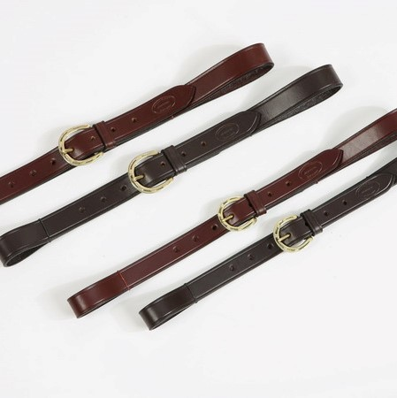
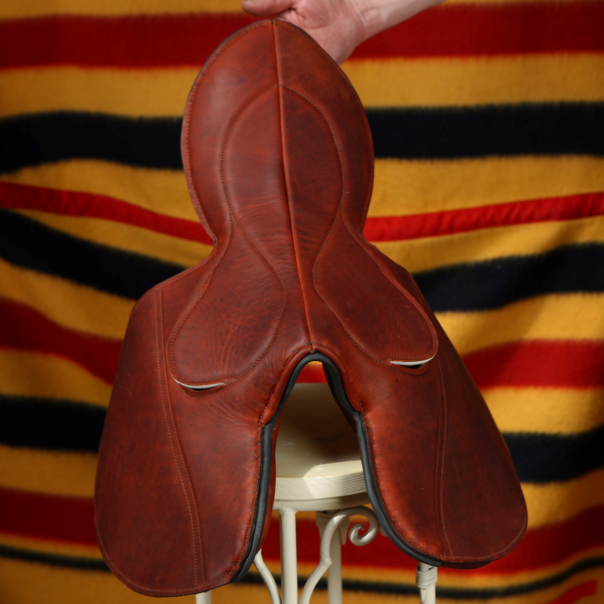

Product categories
Products
Browse the product ranges from Declan Clancy Saddlery.

Eventing & Showjumping
Bridles, nosebands, breastplates, boots and reins.

Belts
Made-to-measure leather belts and accessories.

Racing & Exercise
Quality saddlery for training and racing.

Saddles
Care, maintenance and repairs for all saddle types.

Showing & Breeding
In-hand bridles, headcollars, leads and accessories.

Repairs & Maintenance
Long-term care for your saddlery investment.